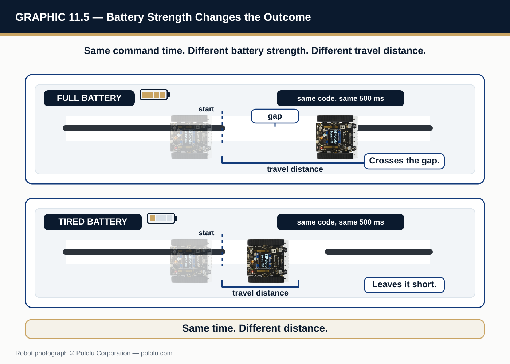
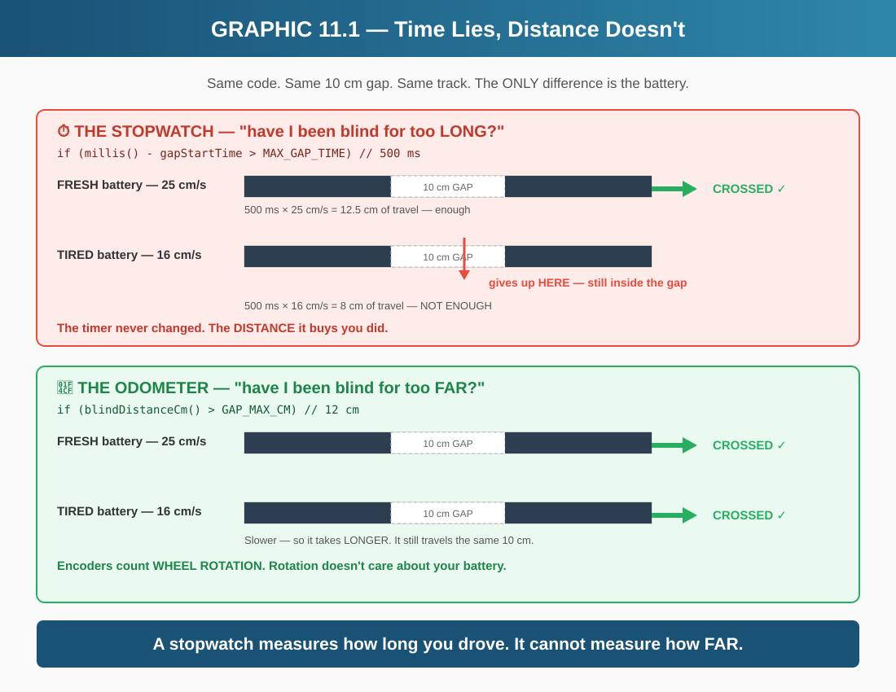
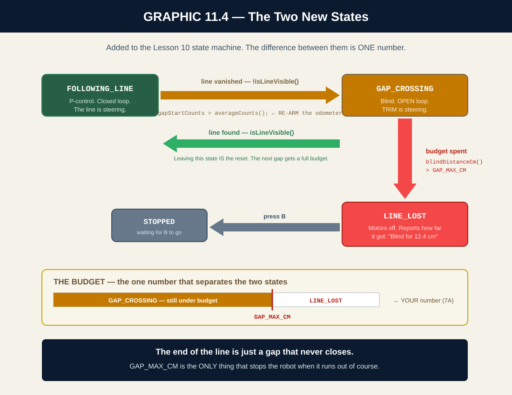
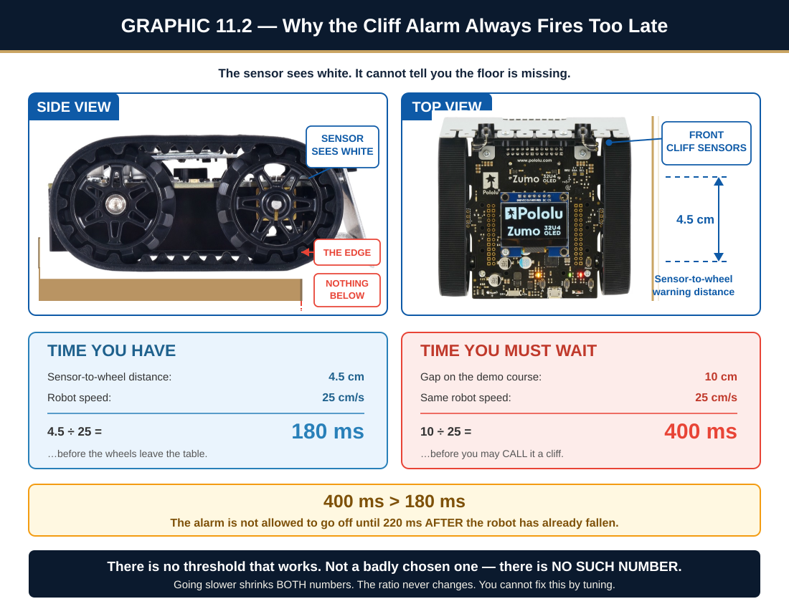
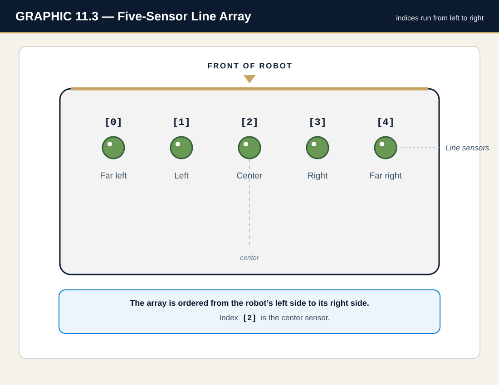

Your robot works. It follows the line, reads the intersections, drives around obstacles.
You tested it, it passed, you put it on the shelf.
Two weeks later you plug in a half-charged battery, put it on the same track,
and it drives straight off the end of the line.
Nothing changed. Not the code, not the track, not the robot. Only the battery.
NOTE
The bug is in Lesson 8, and it has been there the whole time.
Lesson 8 crosses gaps with a stopwatch: MAX_GAP_TIME = 500 milliseconds. But a stopwatch measures how long you drove. It has no idea how far you got. A tired battery drives slower — so the same 500 ms carries the robot less distance. The code did not break. The code was always broken. The full battery was hiding it.
This lesson fixes it in one move: stop counting time, start counting distance. You already own the hardware to do it — the encoders have been on the robot since Lesson 6.

GRAPHIC 11.5 — Same track, same 500 ms command, two batteries: a fresh pack carries the robot across the gap, a tired pack leaves it short. The code never changed.
A gap is a place where the line stops and then starts again. A scuff in the tape,
a doorway, a deliberate break in the course. For a few centimeters, your robot is blind:
all five sensors see white, and P-control has nothing to steer against.
The robot has exactly two choices. Stop — and never finish a course with a scuff in it.
Or drive straight and hope — and hope has to have a limit, or a robot that runs off the
end of the line will keep driving until the battery dies.
The limit is the whole design problem. How much blindness is acceptable?
3.2 Time Is the Wrong Answer
Here is what Lesson 8 does. You have been running it for three lessons:
void handleGap() {
if (gapStartTime == 0) {
gapStartTime = millis();
}
if (millis() - gapStartTime > MAX_GAP_TIME) {
motors.setSpeeds(0, 0);
currentState = STOPPED; // The state machine absorbed the old bool
display.setLayout21x8();
display.clear();
display.gotoXY(0, 0);
display.print(F("LINE LOST!"));
display.gotoXY(0, 2);
display.print(F("Press B to retry"));
return;
}
motors.setSpeeds(BASE_SPEED + TRIM, BASE_SPEED); // Blind AND straight = TRIM
}
Read the condition: millis() - gapStartTime > MAX_GAP_TIME.
That is a stopwatch. It gives the robot 500 milliseconds of blindness, and then quits.
Now ask the question that breaks it: how far does the robot travel in 500 milliseconds?
It depends on the battery. And that is fatal.
A fresh battery drives the robot faster, so 500 ms carries it further. A tired battery drives it slower, so the same 500 ms carries it less far. You tuned MAX_GAP_TIME on a full charge. At half charge, that number is silently covering a shorter gap — and the robot gives up in the middle of a gap it crossed fine this morning.
A stopwatch does not measure distance. It measures time and hopes speed was constant. Speed is never constant.
3.3 Distance Is the Right Answer
Encoders do not care about your battery. They count wheel rotation.
If the wheel turned, they counted it. If the wheel did not turn, they did not.
A slow robot and a fast robot that travel 10 cm both report the same encoder count —
the slow one just took longer to get there.
You have had this instrument since Lesson 6. driveDistance() already uses it.
The conversion is already sitting in RobotConfig.h:
Lesson 8 asked "have I been blind for too LONG?" — a stopwatch. Lesson 11 asks "have I been blind for too FAR?" — an odometer.
Same function. Same call site. Same name. One question changed.

GRAPHIC 11.1 — The same gap, the same code, two batteries. Only the stopwatch cares.
3.4 Two New States
In Lesson 10 you learned that a state machine gives each behavior a name.
Gap crossing needs two new ones:
GAP_CROSSING — driving blind, counting the distance, budget not yet spent.
LINE_LOST — drove the whole budget, never found the line. Stop and say so.
The difference between them is one number: how far you have gone since the line vanished.

GRAPHIC 11.4 — GAP_CROSSING and LINE_LOST. The difference between them is one number.
3.5 Why We Cannot Code Our Way Off the Table
Here is a question every robotics student asks, and it deserves a real answer:
"If the robot can tell when the line disappears, why can't it tell when the table disappears
— and stop before it drives off the edge?"
It is a good instinct. It is also, on this robot, impossible — and understanding
why is worth more than any line of code in this lesson.
The sensor does not see a cliff. It sees white.
A line sensor is an infrared reflectance sensor. It shines IR light down,
and measures how much bounces back. Black tape absorbs the light: low reflection.
White paper returns it: high reflection.
Now hold the robot over the edge of the table. What bounces back?
Nothing. No reflection at all — which reads exactly the same as
the brightest possible white. The sensor cannot tell you the floor is missing.
It can only tell you no light came back, and it has no way to say why.
So you would have to measure how long you have been blind.
Which is exactly the machinery you are building in this lesson. A cliff, in software,
would have to be "white that never ends."
But a legal gap is also white. Your gaps are several centimeters wide, and the robot has to be
allowed to cross them. So the alarm cannot fire until the robot has been blind for
longer than the widest gap you want to survive.
And that is where the arithmetic kills it.
The sensors sit at the front edge of the robot. The wheels are a few centimeters
behind them. So from the moment the sensors cross the edge, you have only the time it takes
the robot to roll forward a few centimeters — a fraction of a second — before the wheels
go over too.
But you just agreed the alarm is not allowed to fire until the robot has driven further
than a legal gap. And a legal gap is wider than that few-centimeter head start.
The alarm is not allowed to go off until the robot has already fallen.
The distance you must travel before you are permitted to call it a cliff is larger than the distance you have available before the wheels leave the table. There is no threshold value that both crosses gaps and stops for cliffs. Not a badly chosen one. There is no such number.
If you want to check that claim yourself, the full arithmetic is in Section 8A.4.

GRAPHIC 11.2 — 400 ms > 180 ms. The alarm cannot legally fire until after the robot has fallen.
The answer is a piece of wood.
So we do not solve this in software. We solve it by running the robot on the floor,
or by putting a physical barrier at the table edge.
That is not giving up. That is engineering.
The lesson worth keeping.
Sometimes the correct engineering answer is not a better algorithm. It is a piece of wood.
A good engineer does the arithmetic first, finds out the software cannot win, and spends four dollars on a rail instead of four weeks on a bug that was never fixable. Shipping a guard that almost works would be worse than shipping none — because then people trust it.
And notice what the arithmetic actually told us. It did not say "impossible."
It said the sensor is in the wrong place. Mount a downward sensor on a boom that sticks out
in front of the wheels, and the head start gets bigger — the inequality flips, and the
alarm can fire in time.
The fix was never a smarter algorithm. It was a mounting position.
That is the kind of thing the math tells you, and guessing never does.
Good news: there is nothing to install. Every sensor this lesson needs is already bolted to your robot and already wired into your code.
Hardware
Since
Job in this lesson
Wheel encoders
Lesson 6
Count wheel rotation → the odometer. The star of this lesson.
Line sensors (five)
Lesson 4
Tell you the line vanished. That is the trigger.
OLED display
Lesson 1
Reports the measured gap width in Section 7A.

GRAPHIC 11.3 — The five-sensor array. All five must read white before the robot calls it a gap.
NOTE
No new wiring. No new jumpers. No new library.
This is what good architecture buys you. In Lesson 7 you organized the code into modules. In Lesson 6 you built averageCounts(). Today you spend that work — the whole lesson is about asking a better question of hardware you already own.
Section 5 · Code WalkthroughThe Function That Changed Its Mind
5.1 The Odometer
Two small functions do all the work. Neither one is new to you — averageCounts() is lifted straight out of Lesson 6's driveDistance().
// ===== HOW FAR HAVE WE BEEN BLIND? (NEW for Lesson 11) =====
// Ask BOTH wheels, exactly like Lesson 6's driveDistance() does.
// One encoder can lie: a wheel that slips or catches reports a distance
// the robot never travelled. Two encoders, averaged, tell the truth.
long averageCounts() {
long left = abs(encoders.getCountsLeft());
long right = abs(encoders.getCountsRight());
return (left + right) / 2;
}
// Distance driven since the line vanished, in centimeters.
// COUNTS_PER_CM turns wheel rotation into real-world distance.
float blindDistanceCm() {
long travelled = averageCounts() - gapStartCounts;
return travelled / COUNTS_PER_CM;
}
NOTE
Why average BOTH wheels?
Because one encoder can lie. If the left wheel slips on a smooth patch, it under-reports. If it catches on a seam, it over-reports. Either way, a robot that gates on one encoder is trusting a single witness.
Averaging both is not about precision. It is about honesty. This is the same rule driveDistance() and turnDegrees() have followed since Lesson 6.
5.2 The Function That Changed Its Mind
Here is the new handleGap(). Compare it to the Lesson 8 version in Section 3.2 — same name, same call site, same job:
// The SAME function you have called since Lesson 8. Same name, same
// call site, same job: drive blind and hope the line comes back.
// ONE thing changed - the question it asks.
//
// Lesson 8: "have I been blind for too LONG?" <- a stopwatch
// Lesson 11: "have I been blind for too FAR?" <- an odometer
//
// That is the whole lesson.
void handleGap() {
// First step into the gap? Mark WHERE we went blind, not WHEN.
if (currentState != GAP_CROSSING) {
gapStartCounts = averageCounts();
currentState = GAP_CROSSING;
}
// Spent the whole distance budget and still no line? Give up.
if (blindDistanceCm() > GAP_MAX_CM) {
motors.setSpeeds(0, 0);
currentState = LINE_LOST;
return;
}
// Drive straight across. We are BLIND here - no line to correct
// against, so P-control has nothing to work with. This is an OPEN
// loop, and open loops need TRIM or they curve away into the carpet.
motors.setSpeeds(BASE_SPEED + TRIM, BASE_SPEED);
}
Read the last line. That TRIM is not decoration.
Inside a gap, P-control is asleep. There is no line to correct against, so followLine() has nothing to work with. This is an open loop — the robot is driving on faith.
And an open loop with mismatched motors curves. Nothing is holding the robot straight across that gap except the TRIM number you found in Lesson 6. Set it to 0 and watch the robot wander out of the gap sideways. Open loop needs TRIM. Closed loop does not.
5.3 The Two New States
case GAP_CROSSING: {
if (killSwitchPressed()) break;
// Found it! The gap is over. Hand control back to P-control.
if (isLineVisible()) {
currentState = FOLLOWING_LINE;
showStatus();
break;
}
// Still blind. Keep driving, keep counting.
handleGap();
break;
}
case LINE_LOST: {
// Drove the whole budget, never found the line. Stop and say so.
motors.setSpeeds(0, 0);
display.setLayout21x8();
display.clear();
display.gotoXY(0, 0);
display.print(F("LINE LOST"));
display.gotoXY(0, 2);
display.print(F("Blind for "));
display.print(blindDistanceCm(), 1);
display.print(F(" cm"));
display.gotoXY(0, 4);
display.print(F("Press B to retry"));
if (buttonB.getSingleDebouncedPress()) {
currentState = STOPPED;
showStatus();
}
break;
}
Notice how little GAP_CROSSING does. It checks the kill switch, checks whether the
line came back, and otherwise hands off to handleGap(). The counting lives in one place.
And LINE_LOST does something the old code never did: it tells you how far it got.
"Blind for 12.4 cm" is a debuggable message. "LINE LOST!" is not.
BRAIN CHECK 01 · MENTAL KNOWLEDGE CHECK — Answer From Your Head
That is the reading done. Before you put a single wheel on the floor, answer these five from your head — no scrolling back, no robot, no help. Then click to compare. If your answer and the reveal disagree, the section number tells you where to re-read.
1. A gap is a place where the line stops and then starts again. What do all five line sensors read while the robot is inside one, and what does that leave P‑control to steer against? (§3.1)
All five read white. The robot is blind — there is no line under any sensor, so P‑control has nothing to steer against at all. That leaves the robot exactly two choices: stop, and never finish a course with a scuff in it; or drive straight and hope. Hope has to have a limit, or a robot that runs off the end of the line keeps driving until the battery dies. How much blindness is acceptable is the whole design problem of this lesson.
2. Lesson 8’s handleGap() is a stopwatch. Quote the condition that makes it one, and state the question that breaks it. (§3.2)
The condition is millis() - gapStartTime > MAX_GAP_TIME — five hundred milliseconds of blindness, then quit. The question that breaks it: how far does the robot travel in 500 ms? It depends on the battery. A fresh one carries the robot further in that time, a tired one less far, and you tuned the number on a full charge — so at half charge it is silently covering a shorter gap and the robot gives up in the middle of a gap it crossed fine that morning. A stopwatch does not measure distance. It measures time and hopes speed was constant.
3. You do not have to write the counts‑to‑centimeters conversion for this lesson — it is already sitting in RobotConfig.h. Name the constant, and the lesson it arrived in. (§3.3)
COUNTS_PER_CM, which has been in your project since Lesson 6 — driveDistance() already uses it. It is defined as COUNTS_PER_ROTATION / (WHEEL_CIRCUMFERENCE_MM / 10.0). The reason it works here is that encoders do not care about your battery: they count wheel rotation, so a slow robot and a fast robot that both travel 10 cm report the same count. The slow one just took longer to get there.
4. Name the two states this lesson adds to your state machine, and the one number that tells them apart. (§3.4)
GAP_CROSSING — driving blind, counting the distance, budget not yet spent. LINE_LOST — drove the whole budget and never found the line, so stop and say so. The difference between them is one number: how far you have gone since the line vanished. Everything else about the two states is the same robot doing the same thing.
5. Hold the robot out over the edge of the table. What does a line sensor report — and why is that the same reading it gives over the brightest possible white? (§3.5)
Nothing bounces back, and no reflection at all reads exactly the same as the brightest possible white. A line sensor is an infrared reflectance sensor: it shines IR down and measures how much returns. Black tape absorbs it, white paper returns it, and a missing floor returns nothing — which is the low end of the same one scale the sensor has. It can only tell you no light came back, and it has no way at all to say why. The sensor does not see a cliff. It sees white.
Section 6 · Build ItThe Odometer
Six steps. Every one of them compiles — you can upload and test after any step, and the robot will still run. Nothing is broken in the middle.
📁 Step 1: Copy Your Lesson 10 Projectno code
Open the Project Maker, generate a Lesson 11 project, and open it in VS Code.
Everything from Lesson 10 is already there — line following, intersections, obstacle avoidance,
the state machine, the kill switch.
Upload it before you change anything. It should behave exactly like Lesson 10 did.
That is your baseline. If it does not work now, it will not work after you edit it.
Open RobotConfig.h. Find the Lesson 8 line-following block, and add this underneath it:
// ===== GAP CROSSING (NEW for Lesson 11) =====
// Lesson 8 crossed gaps with a STOPWATCH (MAX_GAP_TIME, above).
// A stopwatch measures how long you drove. It cannot measure how FAR.
// A tired battery drives slower, so 500 ms covers less ground - and the
// same code that worked this morning drives off the end of the line.
// Encoders count WHEEL ROTATION. That is distance. Distance does not
// care about your battery.
//
// Measured in CENTIMETERS, like every other distance in this project.
// COUNTS_PER_CM (top of this file) does the conversion for you -
// never hardcode a raw count.
const float GAP_MAX_CM = 0.0; // <-- YOUR NUMBER. Measure your widest gap in
// Section 7A, then add a little margin.
TIP
Leave it at 0.0 for now. That is not a mistake.
You are going to measure this number in Section 7A, not guess it. A guessed threshold is the reason the old code was fragile. The robot is about to tell you the right answer — wait for it.
📁 Step 2b: Name the Two New StatesRobotConfig.h
Still in RobotConfig.h. Find the RobotState enum and add two names:
// ===== ROBOT STATES (UPDATED for Lesson 11) =====
// One name for "what is the robot doing right now"
enum RobotState {
STOPPED, // Motors off, waiting for B
FOLLOWING_LINE, // P-control driving - Lesson 8's whole job
AT_INTERSECTION, // Stopped on a marker, announcing the decision
EXECUTING_TURN, // Turning on Lesson 6's encoder machinery
OBSTACLE_DETECTED, // From Lesson 10: something is in the way - stop and plan
AVOIDING_OBSTACLE, // From Lesson 10: driving the avoidance maneuver
RETURNING_TO_LINE, // From Lesson 10: maneuver done, hunting for the line again
GAP_CROSSING, // NEW: driving blind across a gap, counting the distance
LINE_LOST // NEW: drove the whole budget and never found the line
};
Open main.cpp. Find the state variables at the top and add one more:
// ===== THE GAP ODOMETER (NEW for Lesson 11) =====
// Lesson 8 asked "WHEN did the line disappear?" and stored a TIME.
// Lesson 11 asks "WHERE did the line disappear?" and stores a DISTANCE.
// Same question, better units.
long gapStartCounts = 0; // Encoder reading at the moment we went blind
NOTE
You now have BOTH instruments installed.
The old gapStartTime stopwatch is still there, and the new gapStartCounts odometer sits next to it. That is deliberate — the stopwatch is still running the robot until Step 5. You retire it in Step 6, after nothing needs it any more.
Never delete the working thing before the replacement works.
Add these two functions. Put them right below killSwitchPressed():
// ===== HOW FAR HAVE WE BEEN BLIND? (NEW for Lesson 11) =====
// Ask BOTH wheels, exactly like Lesson 6's driveDistance() does.
// One encoder can lie: a wheel that slips or catches reports a distance
// the robot never travelled. Two encoders, averaged, tell the truth.
long averageCounts() {
long left = abs(encoders.getCountsLeft());
long right = abs(encoders.getCountsRight());
return (left + right) / 2;
}
// Distance driven since the line vanished, in centimeters.
// COUNTS_PER_CM turns wheel rotation into real-world distance.
float blindDistanceCm() {
long travelled = averageCounts() - gapStartCounts;
return travelled / COUNTS_PER_CM;
}
Upload it. The robot behaves exactly as before — because nothing calls these yet. That is fine. You just built the instrument; you have not picked it up.
This is the lesson. Find handleGap() and replace the whole function:
// The SAME function you have called since Lesson 8. Same name, same
// call site, same job: drive blind and hope the line comes back.
// ONE thing changed - the question it asks.
//
// Lesson 8: "have I been blind for too LONG?" <- a stopwatch
// Lesson 11: "have I been blind for too FAR?" <- an odometer
//
// That is the whole lesson.
void handleGap() {
// First step into the gap? Mark WHERE we went blind, not WHEN.
if (currentState != GAP_CROSSING) {
gapStartCounts = averageCounts();
currentState = GAP_CROSSING;
}
// Spent the whole distance budget and still no line? Give up.
if (blindDistanceCm() > GAP_MAX_CM) {
motors.setSpeeds(0, 0);
currentState = LINE_LOST;
return;
}
// Drive straight across. We are BLIND here - no line to correct
// against, so P-control has nothing to work with. This is an OPEN
// loop, and open loops need TRIM or they curve away into the carpet.
motors.setSpeeds(BASE_SPEED + TRIM, BASE_SPEED);
}
The function kept its name, its call site, and its job.
Nothing that callshandleGap() had to change. The state machine does not know anything happened. You swapped the instrument inside the box and the rest of the robot never noticed.
📁 Step 6: Add the Two States — and Retire the Stopwatchmain.cpp
First, add the two new cases to the loop() switch, just before case EXECUTING_TURN:
case GAP_CROSSING: {
if (killSwitchPressed()) break;
// Found it! The gap is over. Hand control back to P-control.
if (isLineVisible()) {
currentState = FOLLOWING_LINE;
showStatus();
break;
}
// Still blind. Keep driving, keep counting.
handleGap();
break;
}
case LINE_LOST: {
// Drove the whole budget, never found the line. Stop and say so.
motors.setSpeeds(0, 0);
display.setLayout21x8();
display.clear();
display.gotoXY(0, 0);
display.print(F("LINE LOST"));
display.gotoXY(0, 2);
display.print(F("Blind for "));
display.print(blindDistanceCm(), 1);
display.print(F(" cm"));
display.gotoXY(0, 4);
display.print(F("Press B to retry"));
if (buttonB.getSingleDebouncedPress()) {
currentState = STOPPED;
showStatus();
}
break;
}
Then teach showStatus() to name them:
switch (currentState) {
case STOPPED: display.print(F("STOPPED")); break;
case FOLLOWING_LINE: display.print(F("FOLLOWING")); break;
case AT_INTERSECTION: display.print(F("INTERSECT")); break;
case EXECUTING_TURN: display.print(F("TURNING")); break;
case OBSTACLE_DETECTED: display.print(F("OBSTACLE!")); break;
case AVOIDING_OBSTACLE: display.print(F("AVOIDING")); break;
case RETURNING_TO_LINE: display.print(F("SEEKING")); break;
case GAP_CROSSING: display.print(F("GAP")); break;
case LINE_LOST: display.print(F("LOST")); break;
Finally — delete this line from the top of main.cpp:
unsigned long gapStartTime = 0; // Lesson 8's stopwatch - retired in Step 6
The stopwatch has no readers left. Retire it.
Nothing reads gapStartTime any more, so it can go. And here is a detail worth noticing: the finished program is smaller than the one you started with. The odometer version compiles to fewer bytes than the stopwatch version did.
The better answer was also the cheaper one. That happens more often than you would think.
📦 Catch Up with Project Maker — Step 6 (finished build)
You have one number to find: GAP_MAX_CM. Do not guess it.
Five rungs. Each one changes one thing and answers one question.
Do them in order. Skipping ahead is how you end up with three broken things at once and no idea which is which.
⚙️ 7A — Make the Robot a Rulermeasure, do not guess
Right now you do not know how wide your gap is. Neither does anyone else.
So ask the robot — it is already carrying a perfectly good measuring instrument.
In RobotConfig.h, temporarily set the budget to a huge number:
// 7A: the robot is a RULER right now, not a robot. 999 means
// "never give up" - we want it to cross the gap and TELL us how far.
const float GAP_MAX_CM = 999.0;
Then change GAP_CROSSING so it reports the gap instead of quietly crossing it:
// Found it! The gap is over. REPORT how wide it was.
if (isLineVisible()) {
motors.setSpeeds(0, 0);
float gapWidth = blindDistanceCm();
display.setLayout21x8();
display.clear();
display.gotoXY(0, 0);
display.print(F("GAP MEASURED"));
display.gotoXY(0, 2);
display.print(gapWidth, 1);
display.print(F(" cm"));
display.gotoXY(0, 4);
display.print(F("Write it down."));
display.gotoXY(0, 6);
display.print(F("B = continue"));
buzzer.playNote(NOTE_C(6), 200, 15);
buttonB.waitForButton();
currentState = FOLLOWING_LINE;
showStatus();
break;
}
TIP
Run it across your real gap.
The robot drives blind, finds the line, stops, and prints the gap width on the OLED. Write the number down. Run it three or four times — the readings will vary a little. Take the biggest one.
Put the code back the way Section 6 had it. Now fill in the blank with what you measured:
// The number you measured in 7A, plus a little margin.
// Too small: the robot quits in the middle of a legal gap.
// Too big: the robot runs off the END of the line and never stops.
const float GAP_MAX_CM = 0.0; // <-- YOUR NUMBER. Try your 7A reading + 2.
Test both failure directions. This matters more than getting it right first try:
Set it too small (try 2). The robot quits in the middle of a gap it should have crossed.
Set it too big (try 50). Run the robot off the end of the line. It keeps going. And going.
Set it to your number. It crosses the gap and stops at the end of the line.
You have just seen both walls. Now you know why the number is where it is.
Open RobotConfig.h. Find your TRIM line and zero it out:
// In a gap you are driving BLIND. P-control is asleep - there is no
// line to correct against. NOTHING holds you straight except this number.
const int TRIM = 0; // <-- YOUR NUMBER (from Lesson 6)
Run the gap again.
Watch the robot carefully as it crosses. It does not go straight — it curves.
On a narrow gap it gets away with it. On a wide one it wanders off the line entirely
and reports LINE LOST even though the line was right there.
Now put your Lesson 6 TRIM number back. Run it again. Straight.
This is the moment TRIM stops being homework.
For three lessons TRIM has been a number you filled in once and forgot. Inside a gap it is the only thing steering the robot.
P-control is asleep. There is no line. Nothing else is holding you straight. A gap is the one place where an open loop has nowhere to hide.
⚙️ 7D — Two Gaps in a Rowdoes the odometer re-arm?
Put a second gap in the track, a few centimeters after the first.
Here is the trap: if the odometer never re-zeroed, the second gap would inherit the first gap's
count — the budget would already be spent, and the robot would quit instantly.
It does not. Read handleGap() again and find out why:
// First step into the gap? Mark WHERE we went blind, not WHEN.
if (currentState != GAP_CROSSING) {
gapStartCounts = averageCounts();
currentState = GAP_CROSSING;
}
And in the GAP_CROSSING case in main.cpp, the comment spells it out:
// NOTE: handleGap() re-arms the odometer on the NEXT gap, because
// it only samples gapStartCounts when currentState is not already
// GAP_CROSSING. Leaving this state IS the reset. Two gaps in a row
// therefore each get a full, fresh budget.
While you are in there, make the robot show its work. Add a live blind-distance readout to the same case so you can watch the budget burn down:
// Still blind. Keep driving, keep counting - and SHOW the count,
// so you can watch the budget burn down against a live course.
display.gotoXY(0, 6);
display.print(F("Blind: "));
display.print(blindDistanceCm(), 1);
display.print(F("cm "));
handleGap();
TIP
Now you can see the number that decides your fate.
Drive both gaps and watch the OLED. The count climbs, resets to zero at the second gap, and climbs again — that reset, happening in front of you, is the answer to the question this rung asked.
Leaving the state IS the reset.
The odometer re-arms only when the robot enters GAP_CROSSING from somewhere else. Finding the line kicks you back to FOLLOWING_LINE — so the next gap comes in fresh, with a full budget.
One if statement is doing that. Make sure you can point at it.
The 7D build also puts the odometer on the screen. While the robot is blind, the bottom row reads Blind: 6.4cm and climbs. Watch it on the first gap, watch it go back to zero, and watch it climb again on the second. You are not taking the re-arm on faith — you are reading it:
// Still blind. Keep driving, keep counting - and SHOW the count,
// so you can watch the budget burn down against a live course.
display.gotoXY(0, 6);
display.print(F("Blind: "));
display.print(blindDistanceCm(), 1);
display.print(F("cm "));
⚙️ 7E — The Payoff — Put the Stopwatch Backprove the lesson
This is the experiment the whole lesson was built for. Do not skip it.
First — you retiredgapStartTime back in Step 6. To put the stopwatch back you have to bring the variable back too. In main.cpp, the two state variables now read:
long gapStartCounts = 0; // Encoder reading at the moment we went blind
unsigned long gapStartTime = 0; // 7E ONLY: Lesson 8's stopwatch, put back
NOTE
This is temporary, and it is the only time the two instruments coexist.
You are putting the old one back purely to watch it fail. Delete it again when you are done.
Temporarily restore Lesson 8's timer version of handleGap():
void handleGap() {
// ===== 7E: THE STOPWATCH, PUT BACK =====
// This is Lesson 8's version, restored on purpose. Same robot, same
// track, same gap. Run it on a FULL battery: it works. Run it on a
// TIRED battery: the robot is slower, so 500 ms carries it less far,
// and it quits before it reaches the other side.
// Then put the odometer back and run the tired battery again.
// The track did not change. The battery did. Only ONE version cares.
if (currentState != GAP_CROSSING) {
gapStartTime = millis();
currentState = GAP_CROSSING;
}
if (millis() - gapStartTime > MAX_GAP_TIME) {
motors.setSpeeds(0, 0);
currentState = LINE_LOST;
return;
}
Now run the exact same track twice:
With a fresh battery. The stopwatch version works fine. Of course it does — that is the charge you tuned it on.
With a tired battery. The robot is slower now. It runs out of time before it runs out of gap, and quits halfway across.
Then put the odometer version back and run the tired battery again. It crosses.
The track did not change. The battery did. Only one version cared.
That is the entire lesson, and you just watched it happen on your own desk.
Robot quits instantly at every gap. "Blind for 0.1 cm."
GAP_MAX_CM is still 0.0. You never filled in the blank — any distance at all is over budget. Go do Section 7A.
First gap works. Every gap after it quits instantly.
The odometer is not re-arming. gapStartCounts must be re-sampled every time the robot enters GAP_CROSSING. Check the if (currentState != GAP_CROSSING) guard in handleGap().
Robot curves out of the gap and reports LINE LOST — but the line was right there.
TRIM. You are in an open loop with no line to correct against. Fill in your Lesson 6 TRIM value. See Section 7C.
Robot runs off the END of the line and keeps driving forever.
GAP_MAX_CM is far too large. The end of the line is just an infinitely wide gap — the budget is what stops it. Lower the number.
Gap distance reads wildly wrong — sometimes double, sometimes half.
You are gating on one encoder instead of averaging both, and a wheel is slipping. averageCounts() must read both.
Compiler: 'GAP_CROSSING' was not declared
You added the state to the switch but not to the enum. Step 2b in RobotConfig.h.
Compiler: 'gapStartTime' was not declared
You deleted the stopwatch in Step 6 but something still reads it. Search main.cpp for gapStartTime — every reader must be gone before the variable is.
Closed loop: the robot measures the thing it is trying to control, and corrects.
followLine() reads the line position 50 times a second and steers toward it.
If it drifts, it sees the drift and fixes it. Mismatched motors do not matter — the loop corrects them.
Open loop: the robot acts and hopes. Inside a gap there is no line to measure,
so there is nothing to correct against. If the motors are mismatched, the robot curves —
and nothing notices.
NOTE
This is why TRIM lives where it lives.
Every open-loop straight line in this book carries TRIM: driveDistance(), handleGap(), the return-to-line drive.
And followLine()deliberately does not — because P-control is already correcting bias 50 times a second, and TRIM would just be fighting its own controller.
Open loop needs TRIM. Closed loop does not.
8A.2 Why Encoders Beat Timers
A timer measures the independent variable. An encoder measures the dependent one.
You do not actually care how long the robot drove. You care how far it went. Time is only a
proxy for distance — and it is only a good proxy if speed is constant.
Speed is never constant: battery voltage sags, carpet drags, a wheel picks up dust.
Whenever you find yourself writing delay() or comparing millis() to control
motion, stop and ask: is there a sensor that measures the thing I actually want?
On this robot, for distance, there always is.
8A.3 The Budget as a Safety Net
GAP_MAX_CM is doing two jobs, and only one of them is obvious.
The obvious job: let the robot cross a gap.
The hidden job: stop the robot at the end of the line. Think about it —
the end of the line is just a gap that never closes. It is infinitely wide.
Without the budget, a robot that reaches the end of the course drives on forever.
GAP_MAX_CM is the only thing that catches it.
8A.4 The Cliff Arithmetic — Checking the Claim from Section 3.5
Section 3.5 claimed the robot cannot be programmed to stop at a table edge.
Claims should be checkable. Here is the arithmetic. Do it yourself with your own numbers —
you may find your robot is even worse off than this one.
Step 1 — How fast is the robot?
BASE_SPEED is 150 on the Zumo's 0–400 scale. Pololu rates the 75:1 gearmotors
at roughly 65 cm/s flat out. Speed is close enough to proportional, so:
speed = 150 / 400 x 65 cm/s
= 0.375 x 65
~ 24 cm/s (call it 25 - round numbers are fine here)
Step 2 — How much head start do you have?
Measure it on your own robot: the distance from the line sensor array
(front edge, underneath) back to the wheel contact patch. On the Zumo 32U4 it is
about 4.5 cm.
That is your entire warning. The moment the sensors cross the edge, the robot has 4.5 cm of
travel left before the wheels follow them over.
warning distance = 4.5 cm
warning TIME = 4.5 cm / 25 cm/s
= 0.18 s = 180 milliseconds
Step 3 — When are you ALLOWED to sound the alarm?
Not immediately — because a legal gap also reads white, and the robot must be permitted
to cross it. So the alarm cannot fire until the robot has been blind for longer than your widest
legal gap. Say your gaps are 10 cm:
alarm distance = 10 cm (must exceed the widest legal gap)
alarm TIME = 10 cm / 25 cm/s
= 0.40 s = 400 milliseconds
Step 4 — Compare them.
you have 180 ms before the wheels go over the edge
you must wait 400 ms before you are allowed to call it a cliff
400 > 180 <-- the alarm fires 220 ms AFTER the robot has fallen
There is no threshold that works. Not a badly chosen one — there is no such number.
To sound the alarm in time, the trigger distance would have to be under 4.5 cm. But any trigger under 4.5 cm fires in the middle of every legal 10 cm gap. The two requirements are mutually exclusive.
Make the robot slower and both numbers shrink together — the ratio never changes. You cannot fix this by tuning.
Step 5 — So what WOULD fix it?
Look at the inequality again. Only one term is under your control:
warning distance > widest legal gap <-- what you NEED
4.5 cm > 10 cm <-- what you HAVE (false)
25.0 cm > 10 cm <-- with a sensor on a 25cm boom (true)
The algorithm was never the problem. The sensor is in the wrong place.
Mount a downward-facing sensor on a boom that sticks out ahead of the wheels,
and the warning distance grows until it exceeds the gap width. The inequality flips.
The same code that was impossible becomes trivial.
This is what arithmetic is FOR.
It did not just tell you "no." It told you exactly which term to change, and roughly how much you would have to change it by.
Guessing would have told you to write better code. The code was never the problem.
Three challenges, easy to hard. Each one starts from your finished Section 6 code.
Challenge 1: The RetreatEasyModerate
📁 Work in: your LastName_L11 build — make LINE_LOST back up to where the line was.
🎯 THE GOAL
LINE_LOST just stops wherever it happens to be — maybe several centimeters past the last line it saw. Make it back up to where the line was. The odometer already knows how far the robot came in blind, so it knows how far to go back — and you’ve owned a drive-exact-distance function since Lesson 6.
🧠 THE LOGIC (Pseudocode)
in the LINE_LOST case:
read how far we came in blind (blindDistanceCm()) BEFORE stopping
stop the motors
if we really moved (more than ~1 cm):
driveDistance(-that distance) (negative = backward)
re-zero the odometer (we are home)
🧩 THE TEMPLATE
driveDistance() takes centimeters, and negative means backward. Read the distance BEFORE you stop the motors.
case LINE_LOST: {
float retreat = ____; // how far we came in blind (read BEFORE stopping)
motors.setSpeeds(0, 0);
if (retreat > 1.0) { // only worth it if we really moved
driveDistance(____); // negative = backward
gapStartCounts = averageCounts(); // we are home; re-zero
}
🔓 Click to reveal solution
case LINE_LOST: {
// CHALLENGE 1: do not just stop - RETREAT.
// blindDistanceCm() knows exactly how far we came in blind.
// driveDistance() (Lesson 6) can take us exactly that far back.
float retreat = blindDistanceCm();
motors.setSpeeds(0, 0);
if (retreat > 1.0) { // only worth doing if we really moved
driveDistance(-retreat); // negative = backward
gapStartCounts = averageCounts(); // we are home; re-zero
}
Note the retreat > 1.0 guard — there is no point reversing 2 mm, and re-zeroing the odometer afterward keeps the next gap honest.
📁 Work in: your LastName_L11 build — sweep for the line before giving up.
🎯 THE GOAL
A robot that loses the line doesn’t have to give up — the line might be six degrees off to one side. When the budget runs out, sweep for it: turn 30° right (resume if found), else sweep 60° left (resume if found), else straighten up and stop.
🧠 THE LOGIC (Pseudocode)
sweep a quarter-turn each way (you own turnDegrees() and isLineVisible()):
turn 30 right -> line visible? resume FOLLOWING_LINE
turn 60 left (past centre) -> line visible? resume FOLLOWING_LINE
neither: turn 30 right to face front again, then STOP
undo the sweep on failure - otherwise the next run starts crooked
🧩 THE TEMPLATE
A small loop does the sweep. The turn amounts are the blanks: right 30, then left 60, then 30 to straighten.
if (buttonB.getSingleDebouncedPress()) {
for (int sweep = 0; sweep < 2; sweep++) {
turnDegrees(sweep == 0 ? ____ : ____); // right 30, then left 60if (isLineVisible()) {
currentState = FOLLOWING_LINE;
showStatus();
return;
}
}
turnDegrees(____); // undo the sweep - face front again
currentState = STOPPED;
showStatus();
}
🔓 Click to reveal solution
// CHALLENGE 2: do not give up - HUNT.
// Sweep a quarter turn each way. The line may be just off to one side.
if (buttonB.getSingleDebouncedPress()) {
for (int sweep = 0; sweep < 2; sweep++) {
turnDegrees(sweep == 0 ? 30 : -60); // right 30, then left 60
if (isLineVisible()) {
currentState = FOLLOWING_LINE;
showStatus();
return;
}
}
turnDegrees(30); // undo the sweep - face front again
currentState = STOPPED;
showStatus();
}
📁 Work in: your LastName_L11 build — slow down as the gap budget burns.
Builds on:
the deceleration leg of Lesson 7’s trapezoidal profile — speed as a function of progress, applied to a budget instead of a distance.
🎯 THE GOAL
The robot charges across a gap at full BASE_SPEED and then stops dead when the budget runs out — a lurch. Make it slow down as the budget burns: full speed at 0% spent, half speed at 100%. The give-up should be a glide, not a slam.
🧠 THE LOGIC (Pseudocode)
spent = blindDistanceCm() / GAP_MAX_CM (0.0 at the start, 1.0 at the budget)
clamp spent to 0.0 .. 1.0 (constrain())
gapSpeed = BASE_SPEED scaled down by spent (full -> half)
drive at gapSpeed + TRIM <- still open loop, KEEP the TRIM
🧩 THE TEMPLATE
Scale the speed by how much budget is spent — and keep the TRIM: you are still open loop here, if anything more so.
float spent = blindDistanceCm() / GAP_MAX_CM; // 0.0 -> 1.0
spent = constrain(spent, ____, ____);
int gapSpeed = BASE_SPEED - (BASE_SPEED / 2) * ____;
motors.setSpeeds(gapSpeed + ____, gapSpeed); // still open loop - keep TRIM
🔓 Click to reveal solution
// CHALLENGE 3: the deeper into the gap, the less you know.
// Burn speed as you burn budget. At 0% spent, full speed.
// At 100% spent, half speed - so the give-up is gentle, not a lurch.
float spent = blindDistanceCm() / GAP_MAX_CM; // 0.0 -> 1.0
spent = constrain(spent, 0.0, 1.0);
int gapSpeed = BASE_SPEED - (BASE_SPEED / 2) * spent;
motors.setSpeeds(gapSpeed + TRIM, gapSpeed);
The TRIM still rides on the left motor. Slowing down does not make the loop any less open — it just makes the mistake cheaper.
📁 Work in: your LastName_L11 build — only RobotConfig.h changes between runs, and your real number goes back at the end — or a fresh copy at the §7C state: → make this folder for me
Builds on:
TRIM from Lesson 3 — the number you tuned in week one, now proven on an open loop where no line can cover for it.
Section 7C showed you the effect: in a gap, TRIM is the only thing steering. This challenge makes you measure it — and checks a prediction you wrote down eight lessons ago.
The setup. Use your widest gap. Place a post-it at your starting point and line the robot's front blade up with its edge — put the robot in the same exact spot every run; the blade is the easiest consistent reference.
Three runs. Before each run, write a prediction in your notebook: which way the robot will drift, and a guess in cm. Then run it, and place a second post-it where it stops — label it with the run number. After three runs the three post-its ARE your data: measure each one's sideways distance from the line.
Run 1: const int TRIM = ___; // your Lesson 6 number
Run 2: const int TRIM = 0; // the correction removed
Run 3: const int TRIM = ___; // DOUBLE your number
In Lesson 3 §7 you recorded which way YOUR robot naturally curves. Run 2 should reproduce it. Run 3 should mirror it. Do they? Six numbers go in your notebook — three guesses, three measurements. That is a Performance Evaluation table row, measured by you.
🔓 Click to reveal solution
The pattern you should see. Run 1 tracks straight, within a centimeter or two. Run 2 drifts toward your robot's natural curve — the direction from your Lesson 3 notebook — because with the correction gone, the motor imbalance is back in charge. Run 3 drifts the opposite way by roughly the same amount: doubling the correction overshoots by about the margin that zero undershoots.
Why the gap is where this shows. Open loop. There is no line, so there is no feedback, so the error compounds with every blind centimeter — drift grows with gap width. On the line, P-control corrects the same imbalance fifty times a second and you never see it.
The diagnostic. If Run 3 drifts the same direction as Run 2, your TRIM sign is wrong — you have been boosting the wrong wheel, and closed-loop control has been quietly covering for it everywhere except in gaps.
Challenge 5: The Cliff Arithmetic — Your NumbersEasyModerate
📁 Work in: your engineering notebook — plus a ruler and your powered-off robot. No code in this one; the deliverable is a page of checked numbers.
Section 8A.4 ran the cliff arithmetic on a demo robot — 25 cm/s, 4.5 cm of warning, 10 cm gaps — and proved no threshold can work. Every number in that proof is checkable, and two of them are yours.
Part 1 — your inequality. Power the robot off, flip it over, and measure YOUR warning distance: from the front edge of the line-sensor array back to where the tracks touch the ground. Compute YOUR speed from your BASE_SPEED (speed ÷ 400 × 65 cm/s). Use your course's widest gap. Redo §8A.4 steps 1–4 with those three numbers. By how many milliseconds does your robot lose?
Part 2 — the boom. §8A.4 says a sensor boom fixes it. How long, exactly, for YOUR gap width? Write the inequality, produce a number in cm.
Part 3 — the proof. §8A.4 claims slowing down cannot help: “the ratio never changes.” Prove it. Call the speed v, write the warning time and the alarm time as expressions in v, and show the comparison comes out the same for every v.
A number you checked is evidence; a number you were handed is a guess. This page is your evidence.
🔓 Click to reveal solution
Worked with the demo numbers (yours will differ — that is the point):
warning time = 4.5 cm / v alarm time = G / v (G = widest gap)
the alarm fires in time only if: G / v < 4.5 / v
multiply both sides by v: G < 4.5 cm
Speed divided OUT. The comparison is between two DISTANCES,
and v was never really in it. A 10 cm gap loses at every speed:
with the demo numbers, 400 ms - 180 ms = 220 ms too late.
The boom. The sensor must ride more than G centimeters ahead of the wheel contact patch. For 10 cm gaps the stock 4.5 cm leaves you at least 5.5 cm short before any safety margin — which is why the fix in §8A.4 is mechanical, not a better threshold. The algorithm was never the problem.
🏁 FINISHED EARLY?
Four gap mysteries wait in Sabotage — each Maker link opens the finished build with one defect planted: an average that listens to only one wheel, an odometer that never re-zeroes, a TRIM you can tune all day for nothing, and centimeters that are really encoder counts.
Each mystery below is a working program with one line changed.
Every one of them compiles cleanly. Every one of them uploads. Every one of them misbehaves.
The planted line is shown to you. That is deliberate — this is not a
spot-the-typo game. The question is harder and more useful:
Why does THIS line produce THAT symptom?
Predict the behavior before you upload it. Then upload it and find out if you were right.
🕵️ Mystery 1: The One-Wheel Lie
The planted line — inside averageCounts():
long averageCounts() {
long left = abs(encoders.getCountsLeft());
long right = abs(encoders.getCountsRight());
return left; // <-- PLANTED
}
Symptom: gap distances are unreliable. Sometimes the robot quits early;
sometimes it runs long. On a clean floor it is almost fine. On carpet it is a disaster.
Q: Why does surface texture change the behavior of a line that never mentions the surface?
Answer
The robot is now trusting a single witness. If the left wheel slips, it under-counts, so blindDistanceCm() reports less distance than the robot really travelled — and the budget never runs out at the right place. If the left wheel catches on a seam, it over-counts, and the robot quits early.
On smooth tile, both wheels behave, and the bug hides. On carpet, they do not.
This is why the rule is average BOTH. Not for precision — for honesty. The average is wrong by half of any single-wheel error, and more importantly, it cannot be wrong by the full amount. A second witness bounds the lie.
if (currentState != GAP_CROSSING) {
currentState = GAP_CROSSING; // <-- PLANTED: the odometer never re-zeroes
}
Symptom: the first gap crosses perfectly. Every gap after it fails instantly,
reporting an enormous blind distance the robot obviously did not travel.
Q: The robot did not move. Where did that huge distance come from?
Answer
gapStartCounts is never updated — it is still 0, its startup value. So blindDistanceCm() is not measuring "distance since the line vanished." It is measuring distance since the robot was switched on.
By the time the robot reaches the second gap, it has driven a metre of line. That whole metre is now counted as "blind" distance — wildly over budget, so LINE_LOST fires on the first loop iteration.
The first gap worked purely because the robot had not driven far yet. A bug that works once is the most dangerous kind. It passes your first test.
Symptom: the robot curves out of every gap. So you go to RobotConfig.h,
find TRIM, and start tuning it. You try 5. You try 15. You try −10.
Nothing changes. At all.
Q: You are changing a number the code declares and the comment tells you to fill in.
Why does the robot completely ignore it?
Answer
Because TRIM is declared, but never spent. It is not in the setSpeeds() call. The value goes nowhere. The variable exists purely to be read by humans.
This one is worse than a crash, and it is worth understanding why. A crash tells you something is wrong. This bug lets you tune for twenty minutes and lose faith in the instrument — you conclude TRIM does not work, or that your robot is broken, or that you are bad at this.
A blank the code never reads is a lie. If a lesson gives you a number to fill in, that number must actually reach the motors. Check the call site, not just the declaration.
Symptom: the robot stops the instant the line disappears.
Every time. Even with GAP_MAX_CM set to 50.
Q: Fifty is a big number. Why is the budget gone immediately?
Answer
The division by COUNTS_PER_CM is missing, so the function returns raw encoder counts while the name and the comparison both claim centimeters.
There are about 74 counts in one centimeter. So a budget of "50" is spent after 50 counts — roughly 7 millimeters of travel. The robot is over budget almost before it has moved.
The compiler cannot help you here. Counts and centimeters are both just numbers to it. Units live in your head, and in the function name — and a function whose name lies is worse than one with no name at all.
The six objectives this lesson opened with in Section 2, asked back — plus three things you either did or did not do at the bench. Tap each one you can honestly claim. All nine unlock the button.
I can…
☐ Explain why a timer is the wrong instrument for measuring a gap, and an encoder is the right one.
☐ Convert encoder counts to centimeters using COUNTS_PER_CM — and never hardcode a raw count again.
☐ Rewrite handleGap() so it asks "how far have I been blind?" instead of "how long have I been blind?"
☐ Add two new states — GAP_CROSSING and LINE_LOST — to the state machine you built in Lesson 10.
☐ Measure a real gap with your own robot instead of guessing a threshold.
☐ Explain, with numbers, why this robot cannot be programmed to avoid falling off a table — and what you would have to change to make it possible.
I have…
☐ Seen the robot curve when TRIM was 0, and go straight when it was not. (§7C)
☐ Run 7E and watched the stopwatch version fail on a tired battery. (§7E)
☐ Found the one if statement that re-arms the odometer between gaps. (§7D)
BRAIN CHECK 03 · KNOWLEDGE CHECK — What You Just Built
Your robot now crosses a gap by counting centimeters instead of milliseconds, and it stops honestly when the line does not come back. These ask whether you know why.
Your robot crosses a 10 cm gap perfectly on Monday. On Friday, with the same code and the
same track, it quits halfway. Name the instrument that caused this, and the instrument that fixes it. (§3.2)
The stopwatch caused it; the odometer fixes it. millis() - gapStartTime > MAX_GAP_TIME asks how long the robot has been blind, and how far it gets in that time depends on the battery. You tuned the number on Monday’s full charge; Friday’s tired battery drives slower, so the same 500 ms carries it less far and it runs out of time before it runs out of gap. Encoders count wheel rotation, so 10 cm is the same count on any charge. The track did not change. The battery did. Only one of the two instruments cared.
followLine() does not use TRIM. handleGap()does.
Both drive the robot forward. Why the difference? (§8A.1)
Open loop needs TRIM; closed loop does not. Inside a gap there is no line to measure, so nothing corrects mismatched motors — the robot curves and nothing notices, which is why TRIM is the only thing holding it straight in there. followLine() is a P‑controller reading line position fifty times a second and steering toward it: it already sees the drift and fixes it, so adding TRIM would make it fight its own controller. Every open-loop straight line in this book carries TRIM — driveDistance(), handleGap(), the return-to-line drive — and the one closed loop deliberately does not.
GAP_MAX_CM lets the robot cross gaps. Name the second job it is quietly doing.
(Hint: what stops the robot at the end of the line?) (§8A.3)
It stops the robot at the end of the line. The end of the line is just a gap that never closes — infinitely wide — so the same budget that lets the robot cross a legal gap is the only thing that catches it when there is no other side to reach. Without it, a robot that finishes the course drives on forever. The obvious job is the one you tuned the number for; the hidden job is the one that saves the robot.
A classmate says: "Just make the robot drive slower — then it'll have time to stop before it
falls off the table." Using the arithmetic in 8A.4, explain why this does not work. (§8A.4)
Because both numbers shrink together and the ratio never moves. At roughly 25 cm/s you have 4.5 cm of head start — 180 ms — and you are not allowed to sound the alarm until the robot has been blind for longer than the widest legal gap, 10 cm, which is 400 ms. Halve the speed and the head start becomes 360 ms while the alarm wait becomes 800 ms; it is still more than double. The real comparison is between two distances, 4.5 cm against 10 cm, and speed cancels out of both sides of it. You cannot fix this by tuning.
You are asked to build a robot that can stop at a table edge. You are not allowed to
change the code. What do you change? (§8A.4, §3.5)
Where the sensor is. Read the inequality again: the warning distance has to exceed your widest legal gap, and today that is 4.5 cm against 10 cm. Mount a downward-facing sensor on a boom that sticks out ahead of the wheels and the warning distance grows — at 25 cm the inequality flips and the same code that was impossible becomes trivial. The algorithm was never the problem. And the other legal answer, the one Section 3.5 actually recommends for your desk, is a piece of wood at the table edge: sometimes the correct engineering answer costs four dollars instead of four weeks.
BRAIN CHECK 04 · REFLECTION — In Your Notebook
No reveal on these — there is no single right answer. Write them in your engineering notebook, in your own words. If you can explain it, you own it.
§3.5 says the correct answer was a piece of wood. Describe a moment in your own build where you kept trying to fix something in code that was not a code problem — and say what doing the arithmetic first would have told you.
You now own two instruments that can measure the same maneuver: a stopwatch and an odometer. Name one place still left in your program where something is measured in time, and argue either that it should stay in time or that it should become a distance.
§8A.4 did not say “impossible” — it named exactly which term to change. Pick one other limit on your robot and say whether it is a software limit or a hardware limit, and how you would tell the two apart.
What's Next?
In Lesson 12: Wheels Lie, you’ll meet the first sensor in this book that answers a different question than the one you asked.
Turn on a slick floor and watch the encoders report a turn that never happened
Compare what the encoders say against what the gyro says
Decide which instrument to trust, and when
Next: Lesson 12 is Wheels Lie — you have just learned to trust the odometer over the stopwatch, and Lesson 12 shows you where the odometer itself goes blind. Put the robot on a slick floor and command a 90-degree turn: the wheels spin, the encoders count honestly, and the robot ends up pointing almost exactly where it started.
The failure entry. Describe a maneuver that worked on a fresh battery and failed on a tired one. What replaced it — and why is the replacement immune? Why judges care: engineers learn from mistakes. Hiding them looks naive; documenting them looks like experience.
const float GAP_MAX_CM = 0.0; // <-- YOUR NUMBER. Measure your widest gap in
// Section 7A, then add a little margin.
enum RobotState {
... ,
GAP_CROSSING, // NEW: driving blind across a gap, counting the distance
LINE_LOST // NEW: drove the whole budget and never found the line
};
New in main.cpp
long gapStartCounts // where we went blind
long averageCounts() // BOTH encoders, averaged
float blindDistanceCm() // how far since the line vanished
The TRIM Rule
Function
TRIM?
Why
handleGap()
YES
Open loop — blind, nothing else steers.
driveDistance()
YES
Open loop — encoders count rotation, not straightness.
 NOTE
NOTE It depends on the battery. And that is fatal.
It depends on the battery. And that is fatal. The lesson worth keeping.
The lesson worth keeping. BRAIN CHECK 01 · MENTAL KNOWLEDGE CHECK — Answer From Your Head
BRAIN CHECK 01 · MENTAL KNOWLEDGE CHECK — Answer From Your Head TIP
TIP — the number you tuned in week one, now proven on an open loop where no line can cover for it.
— the number you tuned in week one, now proven on an open loop where no line can cover for it. ENGINEER’S LOG #11 — feeds: Results (“what didn’t work”)
ENGINEER’S LOG #11 — feeds: Results (“what didn’t work”) Odometer
Odometer